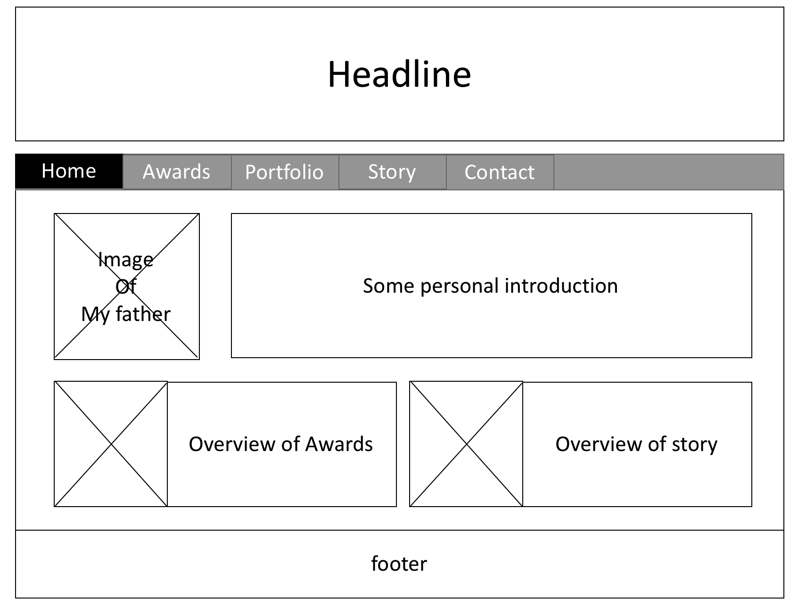
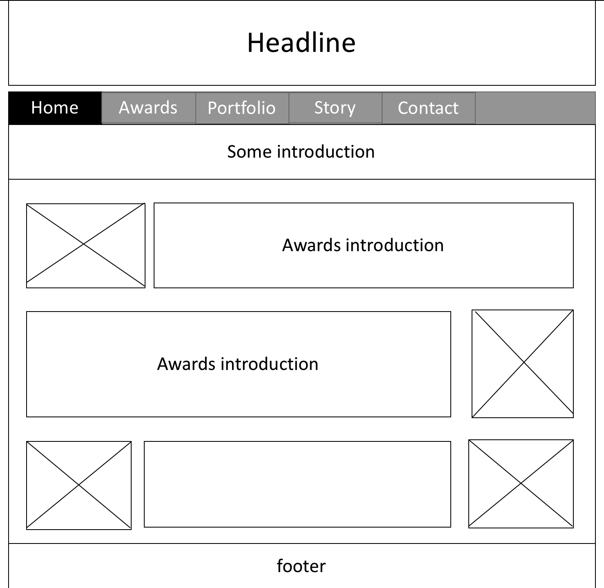
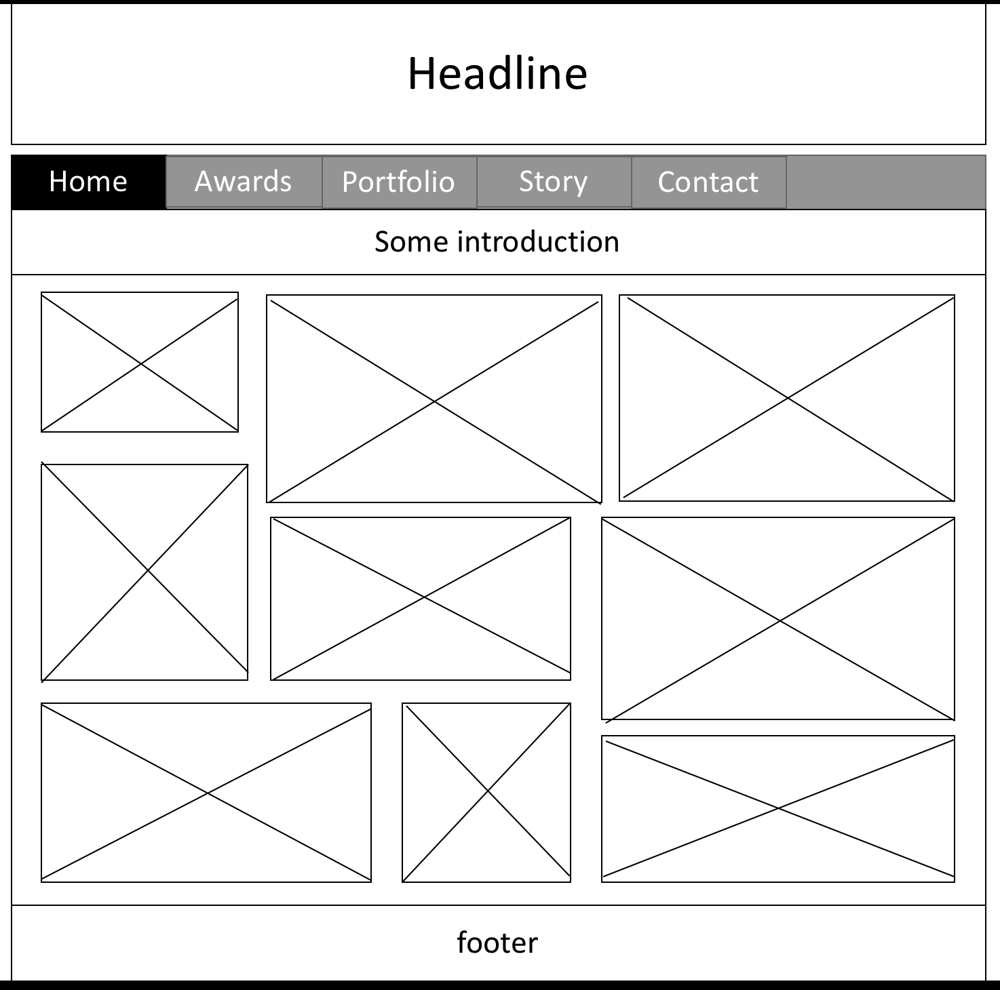
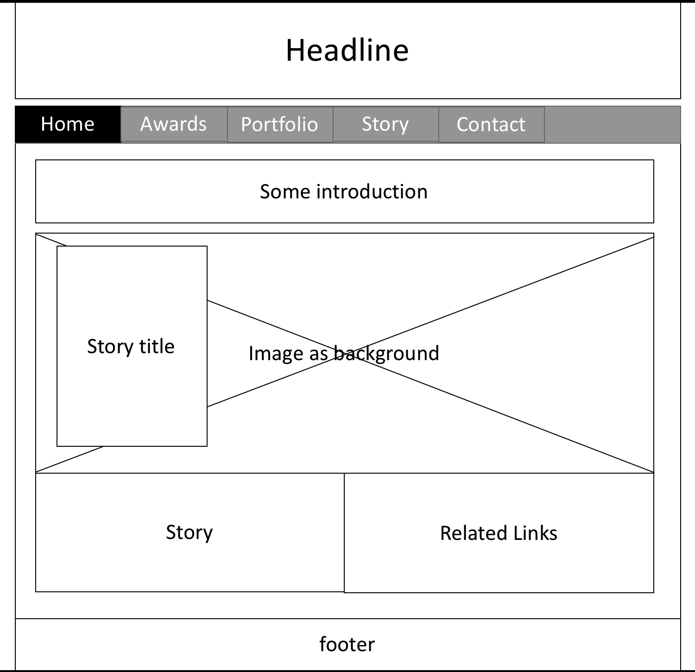

questions:
How are you interested in such website?
What is the part that you most expect?
How often will you visit the website? Why?
What infomation or knowledge do you want to gain from this website?
Summary:
I interviewed five target audience. There are there males and two females, and are all in the age range of 20 – 65. None of them have strong computer skills (only the two amateur photographers are professional with PhotoShop). Two of them are the amateur photographers, while the others are two students a housewife who are interested in photography.
All of them are very interested in this website. And most of them expect the portfolio better. And students are also interested in the stories since they didn't have too much photography oriented trips. They also like the award-winning photographic works better. But both of those amateur photographers do not have a strong preference on the award-winning ones. All these audience would like to visit this website every once in a while, especially the amateur photographers. The actual words is "Probably once a week. I like to see the amazing content on the website post by this photographer. The reason I visit the website once a week is because I know the photographer only show his/her best photos, therefore, they may not have too many photos post within a week.". Also, they would like to gain some new knowledge of composition and post-processing, while the other three audience are looking forward to gaining some inspirations and knowledage on all aspects.
Through this website, I would like to introduce my father who is an amateur photographer. People can sharing his photographic works, awards, and some experiences during his photography life. So that, he can communicate with people who are also interested in photography and gain different opinions from other professional photographers.
As photographers or who are interested in photography, people are tend to share the works with each other as much as they can. That is the reason of people holding different exhibitions all around world. But not all of them can attend all the exhibitions due to the locations. By visiting this website, everyone have access to my father’s portfolio wherever they are.
The world is so big! People who are also interested in photography but are from different area may expose to some new photography subject matters, and which may provide them some inspirations.
Since I would like to have three main parts in my website, I will create three different html files separately besides the home page and use a navigation bar to connect them. The navigation bar will appear on all these three webpages, so that users have access to all the webpages all the time.
One of those three webpages mentioned above will be the portfolio. On that webpage, I would like to combine some images, which are my father’s works, to create a gallery. And when users click on any of these images, it will jump to the google photo where contains much more photographic works.
Another webpage will share a certain story: the image records of children’s living condition in a poor mountain area and my father’s volunteer action. Since my father did a special series of photography for it, in this part, I would like to use one of the photography as the background of one division. And then add some sub-divisions to create a poster-like result by adjusting sizes, padding, margins and font-sizes.
Audience:
First of all, I think there is no restrictions on both gender and locations. As I mentioned above, one of my goals is to break the location restriction. And I believe the age range would be very wide as long as they are interested in photography. They could easily visit my website as long as they have the most basic knowledge that how to browse the webpage. I interviewed five targeted audiences who may be the potential users of my website. There are there males and two females, and are all in the age range of 20 – 65. None of them have strong computer skills. Two of them are the amateur photographers, while the others are two students a housewife who are interested in photography. All of them are very interested in this website.
References:
Silverbox Photographers I like the use case of using image as the background of certain divisions in this website. But I do not like the navigation bar.
Lollipop Photography I like the use case of combining the images and using icons in this website.
Schaeferpix I am very impressed with the background of the main page.
Laura Siegal Very nice footer! But I think the fixed message panel is somehow noisy.
Katfour Photo The header is very neat and impressive! But when I scrolled down, the text content is a little bit over decorated. The style does not match the header and navigation bar
Because I would like to have three main parts in my website, I would like to create three different sub-webpage besides home page: awards, portfolio, and a certain story regarding my father's photograpy life.
Text outlines:
On the home page, I would like to introduce my father briefly. Also, I will give an overview of his photography experience.
On the award webpage, I would like to talk about some of the awards he gained.
The portfolio webpage will be focus on the images. The only text will be an breife introduction.
The story webpage will introduce his special series photographic work. And I would like to share his volunteer experience on this page as well.
Wireframe of website of organization: On each webpage, I would like to use a standout and neat header followed by a colored navigation bar. Also, on each webpage, I will add a footer which contains the contact infomation. Please refer to the images below for the wirefram of all the webpages:
Home page:
Awards page:
Portfolio page:
Story page:
Rationale for organization:
I separate different content in three sub-pages and will list overviews of sub-pages on the home page based on the order showing on the navigation bar, so users can easily focus on a certain part they like.
I will use navigation bar on each webpage, so that users can easily switch among all the webpages. Also, the way of organizing the home page is based on the navigation bar order, which can provide a clear mind of the overview of the entire website.
First of all, I think it's important to know some background of a photography before appreciating his/her works. So I put the introduction on the home page. And based on the questionnaire, I found that different groups are interested in different parts. Creating different sub-webpage could be easily to dive into a certain part.
Media:
I will use lots of photographic works in my website. All of the images are provided by father.
I will insert images into introduction sections. And use lots of images on the portfolio page. Also, I will use an image as the background in a certain division.
All the images I am going to use are from my father directly. I have had his fully permission.
Color scheme and rationale:
I would like to keep the color scheme simple: do not use to many different colors. And use neat header and footer. Avoid colorful decorations.
the main color I am going to use in the home page are dark wine and dark blue, which match the colors of the image in the introduction. In the story page, I am going to use garnet red and ash green. And most of the text will be gray scale.
I pick the color based on the color of images I put into that webpage. Also, I searched and studied rule of thumb of combing colors.